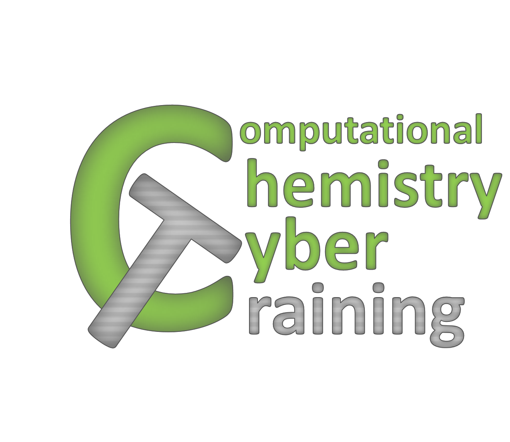

# Software and Tutorials
## 1. Main Links
<a target="_blank" href="https://github.com/Quantum-Dynamics-Hub">Quantum Dynamics Hub
</a>
<a target="_blank" href="https://groups.google.com/forum/embed/?place=forum/quantum-dynamics-hub">Support Group
<img src="images/Logo_Google_groups.png" alt="Google Groups" width="191" height="40" border="0">
</a>
<a target="_blank" href="https://github.com/compchem-cybertraining">Computational Chemistry CyberTraining

</a>
## 2. Packages we develop(ed)
* <a target="_new" href="https://quantum-dynamics-hub.github.io/libra/index.html"><b>Libra</b></a>
is the "methodology development" library we actively develop in the group.
It is intended for various types of calculations in quantum and classical chemical dynamics
and beyond. Learn more about this code on its website (follow the link).
The latest release is here:
[](https://zenodo.org/badge/latestdoi/101275719)
* <a target="_new" href="https://github.com/Quantum-Dynamics-Hub/pyxaid-code"><b>PYXAID</b></a>
is an older (although still in use by some groups) tool for nonadiabatic quantum dynamics (NAQD)
in atomistic systems, developed by Akimov and Prezhdo. The code website (follow the link) contains detailed step-by-step tutorials.
The tutorials cover basic and advanced topics related to practical utilization of the code. They also cover some basics
of calculations with the QE code.
NOTE: we don't really develop or support this tool, since more advanced and consistent calculations can be done with Libra.
* <a target="_new" href="https://github.com/Quantum-Dynamics-Hub/pyxaid2"><b>PYXAID2</b></a>
is a version co-developed with Dr. Wei Li, to include NACs calculations with orbitals given in a two-component spinor format.
NOTE: these capabilities are currently included in Libra
## 3. Packages we use
3.1. [Gaussian](soft_and_tuts/3.1-gaussian.html)
3.2. [PSI4](http://www.psicode.org/) \(Official site\)
3.3. [Quantum Espresso](https://www.quantum-espresso.org/) \(Official site\)
3.4. [DFTB+](https://www.dftbplus.org/) \(Official site\)
3.5. [ErgoSCF](http://www.ergoscf.org/) \(Official site\)
## 4. Center for Computational Research (CCR) at UB
4.1. [SLURM](soft_and_tuts/4.1-slurm.html)
4.2. [Anaconda environments](soft_and_tuts/4.2-anaconda_envs.html)
4.3. [UB VIDIA](soft_and_tuts/4.3-VIDIA.html)
4.4. [UBCCR OnDemand](soft_and_tuts/4.4-UBCCR_OnDemand.html)
## 5. Useful links
5.1. [To start learning any programming language go here](https://www.tutorialspoint.com/index.htm) And then select the language you are interested in
5.2. [Quick Reference for MathJax](https://math.meta.stackexchange.com/questions/5020/mathjax-basic-tutorial-and-quick-reference) Needed to
write methematical equations and formulai in the Markdown (e.g. in Jupyter notebooks)
5.3. [StrapDown examples and docs](https://naereen.github.io/StrapDown.js/) Needed to create html pages (including this one) by typing everything
in the Markdown language. The conversion is done with the help of the StrapDown tool, which combines BootStrap and Markdown.
5.4. [Markdown Cheat-Sheet 1](https://www.markdownguide.org/cheat-sheet/#extended-syntax) Very basic
5.5. [Markdown Cheat-Sheet 2](https://gist.github.com/ww9/44f08d44327a40d2ab309a349bebec57) More advanced options
5.6. [Git Cheat-Sheet](soft_and_tuts/5.6-GIT.html)
5.7. [Conda Cheat-Sheet](https://kapeli.com/cheat_sheets/Conda.docset/Contents/Resources/Documents/index)
5.8. [Gist GitHub](https://gist.github.com/ww9/4419877e9be023e465b9ff99ecb75f40) How to use the GitHub Gist as a blog
5.9. [Gist.io](https://gist.io/) A useful tool for converting GitHub Gists into nice-looking pages
5.10. [PEP8](https://pep8.org/) Python code style conventions, a de-facto standard of good Python codes.
## 6. Programming tutorial sessions
6.1. [Intro to C++](https://ub.hosted.panopto.com/Panopto/Pages/Viewer.aspx?id=0210e826-4d9a-4736-8be2-ac01011224d2)